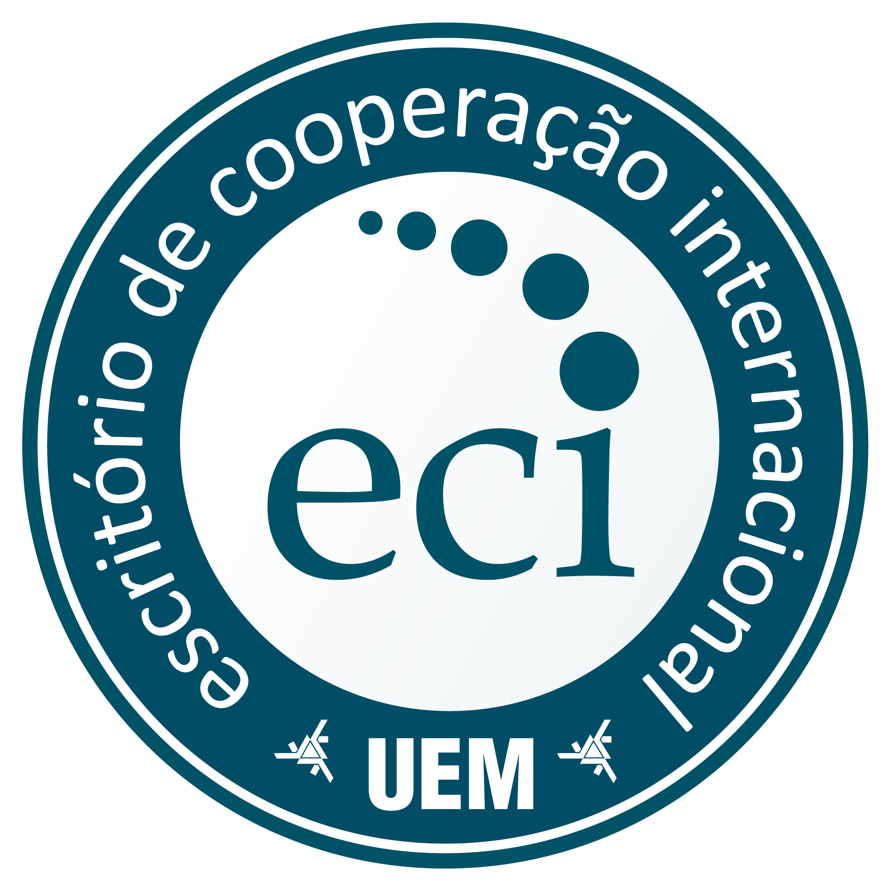

O Escritório de Cooperação Internacional da UEM (ECI), através do Edital 03/2025-ECI, em conjunto com o Programa de Pós-graduação em Matemática da UEM (PMA) promovem a visita do Professor Dr. Jacek Gondzio, da Universidade de Edimburgo, Escócia, Reino Unido, de 09 de outubro de 2025 a 09 de novembro de 2025.
Durante sua visita, o professor Gondzio apresentará uma palestra pública e ministrará um pequeno curso, também aberto ao público, dentro da disciplina de Otimização Não Linear do PMA. Interessados em falar com o professor pessoalmente podem entrar em contato com o coordenador, Francisco Sobral, através de e-mail.
O principais temas de interesse do Professor Jacek Gondzio incluem a teoria e implementação de algoritmos para problemas de otimização de grande escala, e é mais conhecido por suas contribuições na área de Pontos Interiores. Foi educado na Polônia e desde 1998 é professor na Escola de Matemática da Universidade de Edimburgo. Prof. Gondzio é editor de 4 importantes revistas científicas de otimização: Computational Optimization and Applications, European Journal of Operational Research, Mathematical Programming Computation and Optimization Methods and Software.
Coordenador:
Francisco N. C. Sobral
(UEM)
Contato:
fncsobral at uem dot br
Cronograma público da visita
Terça-feira 14 de outubro de 2025
Palestra "Cutting Planes, Column Generation and Decomposition with Interior Point Methods"
Título: "Cutting Planes, Column Generation and Decomposition with Interior Point Methods"
Local: Auditório do DMA, Bloco F67, Sala 217, Universidade Estadual de Maringá, Avenida Colombo, 5790
Horário: Terça-feira 14 de outubro de 2025, das 13:30 às 15:00
Prof Jacek Gondzio
School of Mathematics
The University of Edinburgh
URL: http://www.maths.ed.ac.uk/~gondzio/
Resumo:
Advantages of interior point methods (IPMs) applied in the context of nondifferentiable optimization arising in applications such as cutting planes/column generation and various decomposition schemes (Benders, Dantzig-Wolfe) will be discussed. Some of the many false views of the combinatorial optimization community on interior point methods applied in this context will be addressed and corrected. For example, IPMs deliver a natural stabilization when restricted master problems are solved and guarantee fast convergence, measured with merely a few master iterations needed to localize the solution. When applied in the context of decomposition, IPMs deliver epsilon-subgradients and are well-suited to handle the oracles with on-demand accuracy.
Various such techniques have been discussed in the recent survey on IPMs ('Interior point methods in the year 2025', EURO J. on Computational Optimization, 2025, https://doi.org/10.1016/j.ejco.2025.100105).An approach which combines column generation with IPMs has been successfully used to solve a plethora of applications which include, (robust) vehicle routing problems with time windows, multiple kernel learning problems, truss geometry and topology optimization problems or discrete optimal transport problems, to mention just a few.
Local: Auditório do DMA, Bloco F67, Sala 217, Universidade Estadual de Maringá, Avenida Colombo, 5790
Horário: Terça-feira 14 de outubro de 2025, das 13:30 às 15:00
Prof Jacek Gondzio
School of Mathematics
The University of Edinburgh
URL: http://www.maths.ed.ac.uk/~gondzio/
Resumo:
Advantages of interior point methods (IPMs) applied in the context of nondifferentiable optimization arising in applications such as cutting planes/column generation and various decomposition schemes (Benders, Dantzig-Wolfe) will be discussed. Some of the many false views of the combinatorial optimization community on interior point methods applied in this context will be addressed and corrected. For example, IPMs deliver a natural stabilization when restricted master problems are solved and guarantee fast convergence, measured with merely a few master iterations needed to localize the solution. When applied in the context of decomposition, IPMs deliver epsilon-subgradients and are well-suited to handle the oracles with on-demand accuracy.
Various such techniques have been discussed in the recent survey on IPMs ('Interior point methods in the year 2025', EURO J. on Computational Optimization, 2025, https://doi.org/10.1016/j.ejco.2025.100105).An approach which combines column generation with IPMs has been successfully used to solve a plethora of applications which include, (robust) vehicle routing problems with time windows, multiple kernel learning problems, truss geometry and topology optimization problems or discrete optimal transport problems, to mention just a few.
Quarta 29 a Sexta 31 de outubro de 2025
Curso "Iterative Methods for Large Scale Linear Systems:
Focus on Optimization Applications and Preconditioners Design"
Curso - Quarta 29, quinta 30 e sexta 31 de outubro de 2025
Local: Anfiteatro do DMA, Bloco F67, Sala 217, Universidade Estadual de Maringá, Avenida Colombo, 5790
Horário: 8 às 10 da manhã
Título: "Iterative Methods for Large Scale Linear Systems: Focus on Optimization Applications and Preconditioners Design"
Resumo: This course will address iterative methods for solving very large systems of linear equations. Various techniques will be discussed including fixed point iterations and Krylov subspace methods with their two prominent examples of Conjugate Gradient and Generalized Minimal RESidual (GMRES). The role of preconditioning will be explained in the general context, and the design of specific preconditioners for particular optimization applications will be presented. Interested undergraduate and postgraduate students as well as faculty members are cordially invited.
Detalhes:
Local: Anfiteatro do DMA, Bloco F67, Sala 217, Universidade Estadual de Maringá, Avenida Colombo, 5790
Horário: 8 às 10 da manhã
Título: "Iterative Methods for Large Scale Linear Systems: Focus on Optimization Applications and Preconditioners Design"
Resumo: This course will address iterative methods for solving very large systems of linear equations. Various techniques will be discussed including fixed point iterations and Krylov subspace methods with their two prominent examples of Conjugate Gradient and Generalized Minimal RESidual (GMRES). The role of preconditioning will be explained in the general context, and the design of specific preconditioners for particular optimization applications will be presented. Interested undergraduate and postgraduate students as well as faculty members are cordially invited.
Detalhes:
- Quarta-feira 29/10: Very large systems of linear equations,
Direct vs Iterative Methods,
Naive iterative methods, fixed point iterations. Krylov subspace methods,
Positive definite systems (Conjugate Gradients Method),
Indefinite linear systems (Generalized Minimal RESidual (GMRES) Method).
Slides: e - Quinta-feira 30/10: Acceleration of iterative methods: Preconditioning,
Incomplete Cholesky (IC), Incomplete LU (ILU) preconditioners,
Spectral Analysis. Design of preconditioners.
Slides: e - Sexta-feira 31/10: Preconditioning linear systems arising in optimization,
Preconditioners for Interior Point Methods (IPMs),
Maximum-Volume Preconditioner for IPMs. Examples of preconditioners in practical applications (Machine Learning: sparse approximations, Signal Processing: compressed sensing, Imaging: X-ray tomography, Applied Mathematics: discrete optimal transport).
Slides: e


Last Update: October, 05, 2025.